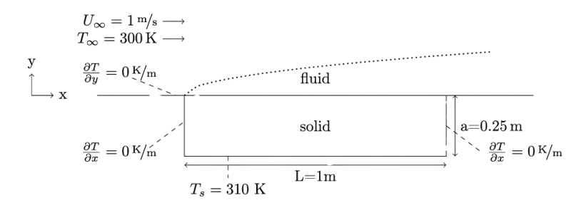
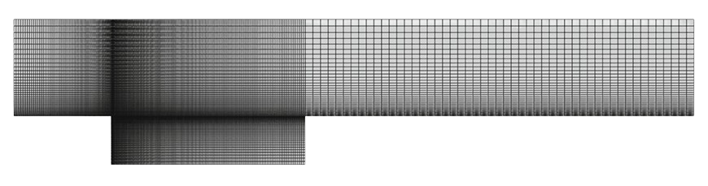

1. Forced convection heat transfer from a flat plate
The fluid enters the computational domain at uniform temperature and velocity, flowing tangentially over a solid plate that is maintained at a constant temperature on its underside. The upper surface of the plate is thermally coupled to the fluid. The configuration is arranged to capture strong thermal gradients near the leading edge and within the developing boundary layer.

The mesh consists of structured hexahedral elements with progressive refinement toward the fluid-solid interface and leading edge of the plate. This ensures accurate resolution of both the thermal and viscous boundary layers without numerical instability or diffusion errors.

The energy equation in both regions is formulated consistently using the general unsteady thermal transport model. In the fluid domain, the governing equation for temperature ( T ) is defined as:
In the solid domain, where the velocity field is absent, the model simplifies to:
Where:
- ( \rho ) is density in kg/m³
- ( c_p ) is specific heat capacity in J/kg·K
- ( k ) is thermal conductivity in W/m·K
- ( \mathbf{u} ) is velocity in m/s
The interface between the fluid and solid regions is modeled using the
heatTransferInterface interface type. Two coupling strategies are configured:
a monolithic approach using the monolithicTemperature boundary on both sides,
and a partitioned method combining a Dirichlet condition on the fluid and a
Neumann condition on the solid.
| Region | Boundary | Partitioned | Monolithic |
|---|---|---|---|
| Fluid | bottom | regionCoupledTemperatureJump | monolithicTemperature |
| Solid | top | regionCoupledHeatFlux | monolithicTemperature |
Boundary conditions are applied per region as follows. The inlet applies a fixed velocity of $(1, 0, 0) , \mathrm{m/s}$ and an inlet temperature $T_\infty = 300,\mathrm{K}$. At the outlet, all gradients are set to zero. The bottom of the solid region is maintained at a constant temperature $T_s = 310,\mathrm{K}$, and lateral solid boundaries are adiabatic. The fluid-solid interface is shared and coupled across the region boundary.
| Boundary | Thermal | Velocity |
|---|---|---|
| Fluid | ||
| inlet | 300 K | (1 0 0)T m/s |
| bottom | coupled | (0 0 0)T m/s |
| slip-bottom (before the plate) | zeroGradient | zeroGradient |
| noSlip-bottom (after the plate) | zeroGradient | (0 0 0)T m/s |
| Outlet, top | zeroGradient | zeroGradient |
| Solid | ||
| top | coupled | — |
| bottom | 310 K | — |
| left, right | zeroGradient | — |
The thermophysical properties are kept nondimensional for clarity. The fluid region is assigned unit density, unit specific heat, and unit thermal conductivity. The solid region also has unit properties, except for the thermal conductivity, which is varied to create contrast between the two regions using values of $k_s/k_f = 1, 5, 20$.
| Property | Symbol | Unit | Solid | Fluid |
|---|---|---|---|---|
| Density | ρ | kg/m3 | 1 | 1 |
| Dynamic viscosity | μ | kg/ms | — | ρfU∞L / Re |
| Thermal conductivity | k | W/m · K | 100 | ks / k |
| Specific heat capacity | cp | J/kg · K | 100 | kfPr / μ |
Test cases are parametrized over Reynolds numbers (Re), Prandtl numbers (Pr), and conductivity ratios (k). The Reynolds numbers used are 500 and 10,000. The Prandtl numbers include both highly diffusive $\text{Pr} = 0.01$ and high-viscosity $\text{Pr} = 100$ cases. Six combinations of these values are evaluated in total.
| Re | Pr | k |
|---|---|---|
| 500 | 0.01 | 1, 5, 20 |
| 0000 | 0.01 | 1, 5, 20 |
| 500 | 100 | 1, 5, 20 |
Temperature development across the interface is evaluated using a dimensionless boundary temperature:
Solver performance is also tracked. The average time spent per timestep for coupling is compared between partitioned and monolithic schemes. The monolithic approach proves to be more robust and efficient, particularly for high Prandtl number flows.
# Specify baseCaseDir and caseStructure as in genCases.py (cf. Listing 15)
# Specify directories in the postProcessing folder to retrieve data from
TdataDir = ’sets/fluid’
Tdata = casefoam.positional_field (TdataDir, ’DataFile_T.xy’, 10,
caseStructure, baseCaseDir)
# Rename the columns
Tdata.columns = [’x’,’T’,’coupling method’,’parameters’]
# Calculate a new column (theta) from the temperature
Tdata[’theta’] = (Tdata[’T’]-300)/(310-300) # Specify the base case name and a directory name for the tests
baseCase = ’baseCase’ baseCaseDir = ’tests’
# Specify the names of the test
cases caseStructure = [# main cases [’monolithic’,’ partitioned_Aitken’],
# subcases for each of the main cases
[’Pr_0.01_Re_500_k_1’, ’Pr_0.01_Re_500_k_5’, ’Pr_0.01_Re_500_k_20’,
’Pr_0.01_Re_10000_k_1’, ’Pr_0.01_Re_10000_k_5’, ’Pr_0.01_Re_10000_k_20’,
’Pr_100_Re_500_k_1’, ’Pr_100_Re_500_k_5’, ’Pr_100_Re_500_k_20’]]
# Partitioned coupling with acceleration type and init. relaxation factor
def p_coupled(accType, relaxValue): return { ’0/fluid/orig/partitioned/T’:
{’boundaryField’: {’interface’: {’accType’: accType, ’relax’ : relaxValue}}},
#!bash’: ’cp baseCase/AllrunP tests/baseCase/Allrun’ }
# Monolithic coupling
m_coupled = {’#!bash’: ’cp baseCase/AllrunM tests/baseCase/Allrun’}
# Parameters
def update_params(Pr, Re, k): L = 1.0 rhof = 1.0 ks = 100.0 Uinf = 1.0 mu =
rhof*Uinf*L/int(Re) kf = ks/k cp = kf\*Pr/mu return { ’constant/fluid/transport
Properties’: { ’mu’: ’mu [ 1-1-1 0 0 0 0 ] %s’ %mu, ’cp’: ’cp [ 0 2-2-1 0 0 0 ]
%s’ %cp, ’k’: ’k [1 1-3-1 0 0 0] %s’ %kf}, ’0/fluid/orig/monolithic/k’:
{’internalField’: ’uniform %s’ %kf} }
# Define input parameters for each of the cases listed in "caseStructure"
caseData = { ’monolithic’ : m_coupled, ’partitioned_Aitken_0.75’:
p_coupled(’aitken’, ’0.75’), ’Pr_0.01_Re_500_k_1’: update_params(0.01, 500, 1),
’Pr_0.01_Re_500_k_5’:update_params(0.01, 500, 5), ’Pr_0.01_Re_500_k_20’:
update_params(0.01, 500, 20), ’Pr_0.01_Re_10000_k_1’: update_params(0.01, 10000,
1), ’Pr_0.01_Re_10000_k_5’: update_params(0.01, 10000, 5),
’Pr_0.01_Re_10000_k_20’: update_params(0.01, 10000, 20), ’Pr_100_Re_500_k_1’:
update_params(100, 500, 1), ’Pr_100_Re_500_k_5’: update_params(100, 500, 5),
’Pr_100_Re_500_k_20’: update_params(100, 500, 20) }
casefoam.mkCases(baseCase, caseStructure, caseData, hierarchy=’tree’,
writeDir=baseCaseDir)